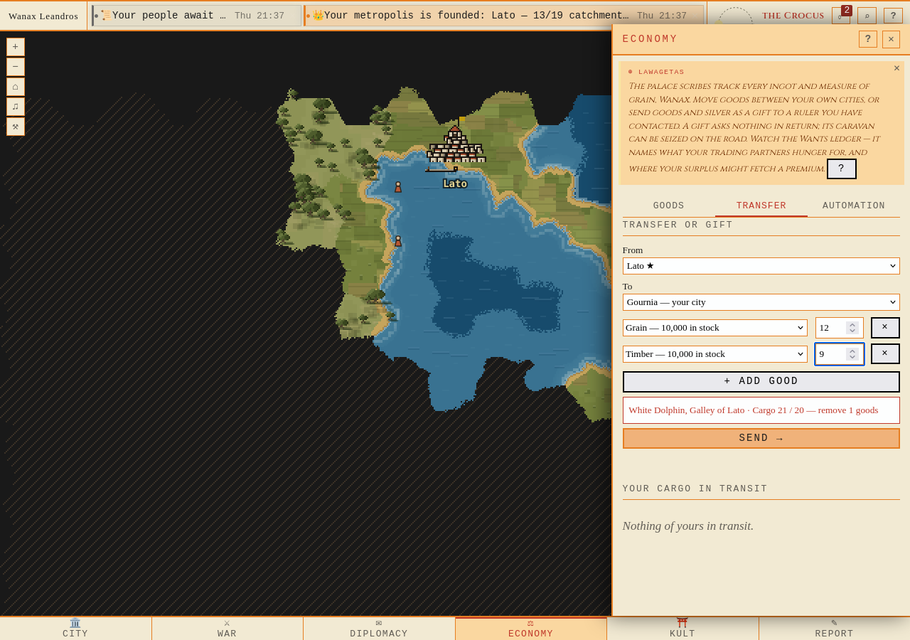
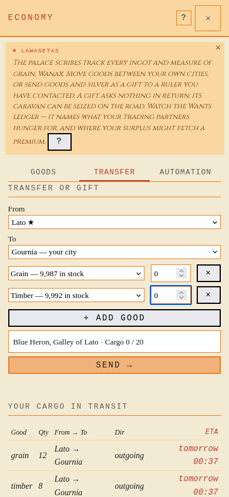
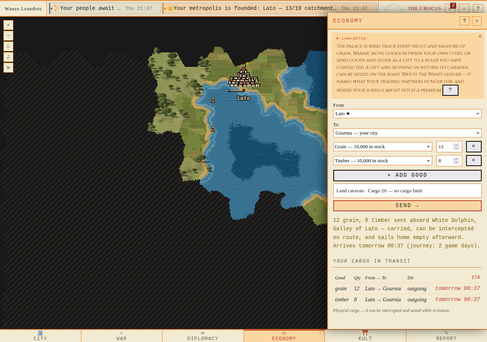
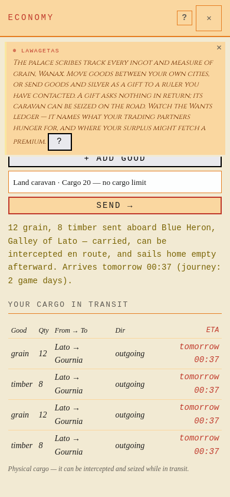

One manifest, one voyage Firefox, native 1280×900 and 390×844. Empty, full and overloaded cargo. Actual app, fresh isolated PostgreSQL/Redis/server; no mocked requests or replaced DOM.
Provenance and assertions · Inventory and scope · Actual Keryx transfer · Actual Keryx cargo
E1280 — Empty: Cargo 0 / 20 P1280 — Partly filled: 12 grain + 6 timber, Cargo 18 / 20 O1280 — Overloaded: 12 grain + 9 timber, Cargo 21 / 20, Send disabled 
E390 — Empty: Cargo 0 / 20 
P390 — Partly filled: 12 grain + 6 timber, Cargo 18 / 20 O390 — Overloaded: 12 grain + 9 timber, Cargo 21 / 20, Send disabled T1280 — Actual dispatch: one ship, two goods in transit 
T390 — Actual dispatch: one ship, two goods in transit 